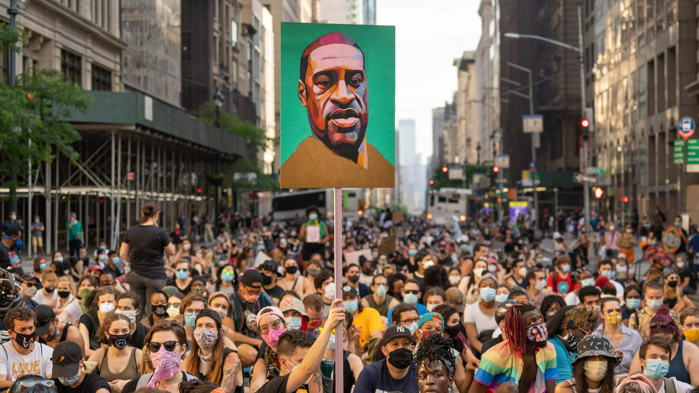

George Floyd Protests
These protests took place in 2020 after George Floyd was murdered by the police in Minnesota. Approximately 26 million people attended the protests nationwide.

Earth Day
These protests took place in 1970, the year that the Environmental Protection Agency was estabilished. Approximately 20 million people came out nationwide.

The 2017 Women's March
This was the largest series of protests that were part of the "Me Too movement," which outed a lot of powerful men for sexually assaulting women.

March for Our Lives
This was a series of protests that took place in 2018 across the country, led by students against gun violence in schools.